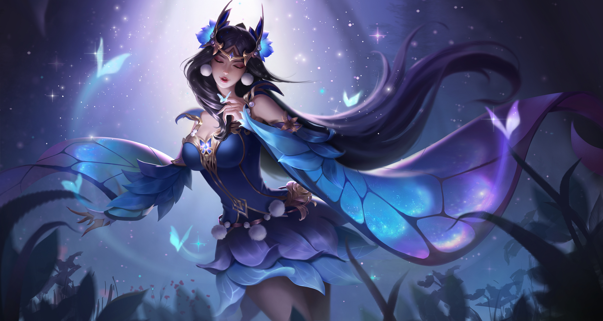
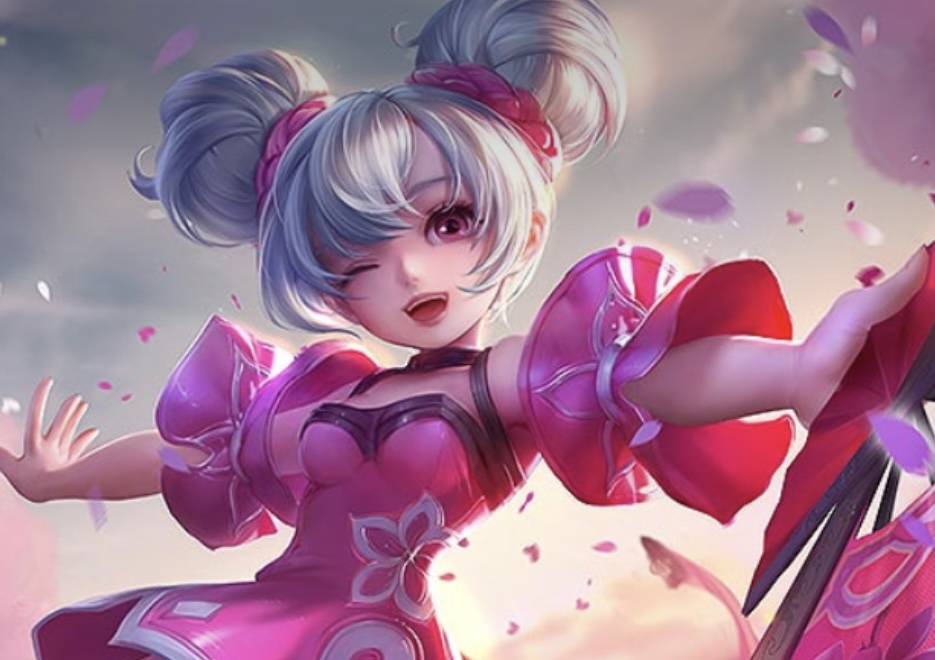
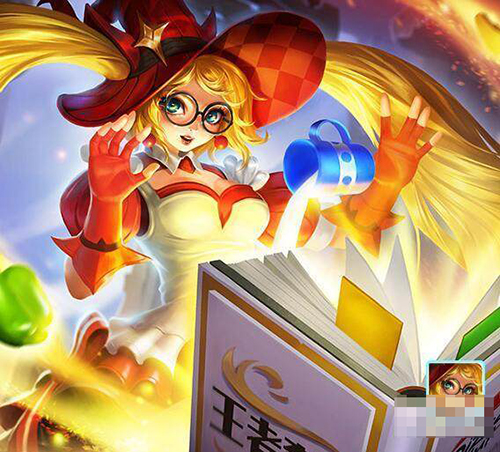

Introduction
to
Honor
Of
King
Characters

"Diao Chan"
is a female hero character in Tencent's handheld game Glory "Honor Of King".
The positioning is an assassin and mage.
The hero was launched on 15 December 2015 in the official service.
The appearance of the city, the body is soft and beautiful.
Lotus is the symbol of Diaochan, as a mage, "Diaochan" can play an important role in group battles.
"Diaochan" can stick to people in the game, can carry out sustained output,
and the spell outfit can also carry out burst damage

"Xiao Qiao"
a hero character in Horor of Kings,
with the cherry blossom and fan as her symbols, represented by the colour pink, and archetypal of Xiao Qiao, wife of Zhou Yu.
Xiao Qiao's speciality is long-range attrition, with a long attack range and a big move that does huge damage in group battles.
She is flexible, and any skill that hits opponents, wild monsters, or minions can increase her movement speed.
With strong control ability,
she relies on troop line development in the early stages and supports her teammates from time to time to gain economy.

"Angela" a hero character game Horor of Kings.
Once upon a time, Angela was a hero with the ability to summon units and was loved by many players.
After the revamp, Angela's skills have been replaced with a new one, and although she doesn't have a big bear as her companion, she has a big book.
Her wide range of attacks, stable stuns and flexible control-free moves make this magical girl even more devastating!
Back to main